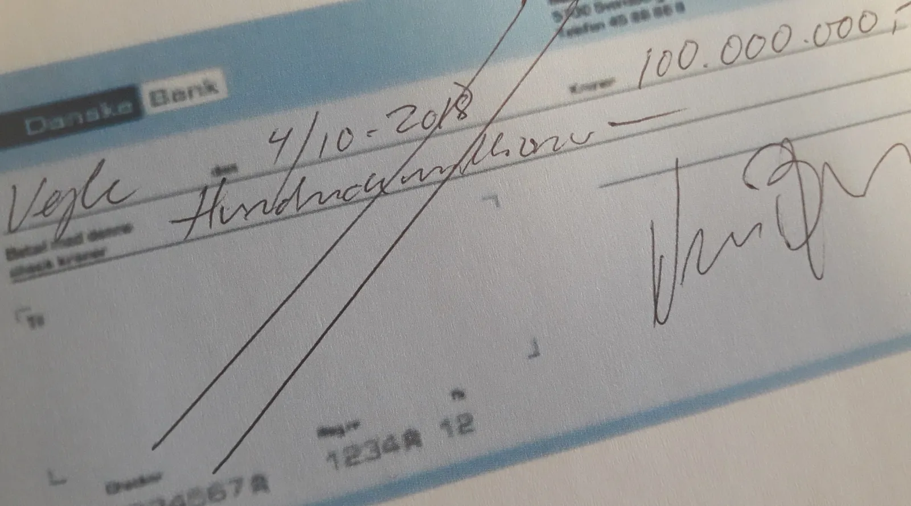

Squadra Molteni – World Tour status i 2021

Når Tour de France starter i Danmark i 2021 – så bliver der forhåbentligt med Squadra Molteni til start som World Tour hold.
Luften i Bjarne Riis og Lars Seiers ballon om et World Tour hold, er blevet kold. Bo Hamburgers crowdfunding-idé om et World Tour hold, er løbet tør.
– Det er jo en skandale, at dansk cykelsport ikke har et World Tour hold. Derfor har jeg og kaptajnen taget en beslutning, lyder det fra Løjtnant Kasper Sørensen fra en cocktailbar i Vejle. Squadra Molteni satser på World Tour status i 2021.
Hvis dansk cykelsport skal have et World Tour hold med til Tour de France starten i Danmark, må nogen tage ansvar.
Veloropa har i dag offentliggjort, at de starter en crowdfunding, så de kan købe ryttere og en World Tour licens. Der er dog langt til de 100 millioner, som de vil samle ind.
– Det er rigtig godt, at Veloropa tager ansvar. Men på Squadra Molteni er vi ikke så meget for det dersens crowdfunding. Vi har rytterne – og økonomien bliver ikke noget problem. Vi har et gammelt checkhæfte fra Danske Bank, fortæller Niels Bjørnsteen.


Efter Squadra Molteni har viftet med det renvaskede checkhæfte, har Kim Plesner fra Veloropa HQ luftet ideen om et fusionsmandskab mellem Veloropa og Squadra Molteni.
Det er bestemt en sympatisk idé. Men vi kan nok ikke blive helt enige om materiel og beklædning…, lyder det fra Molteni HQ.